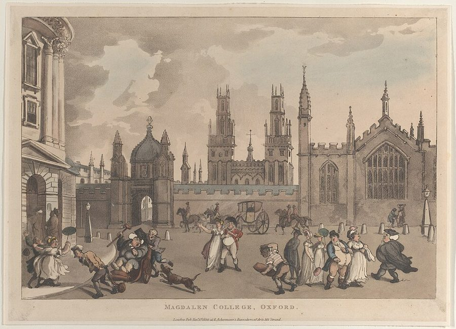
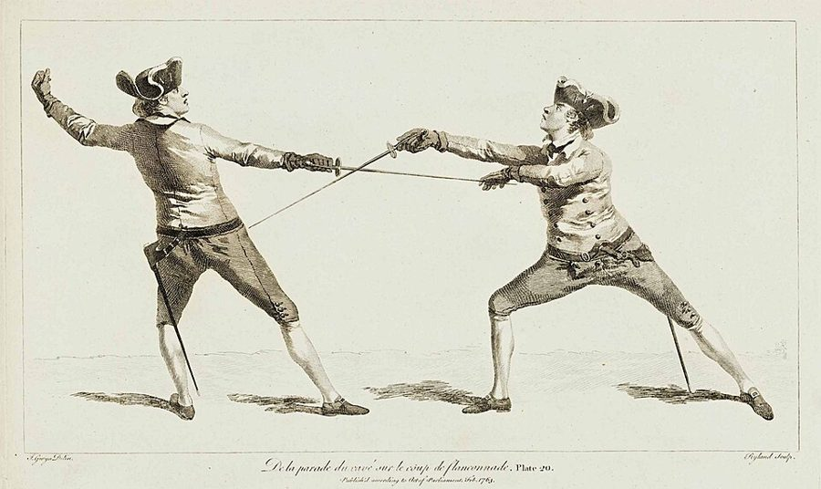
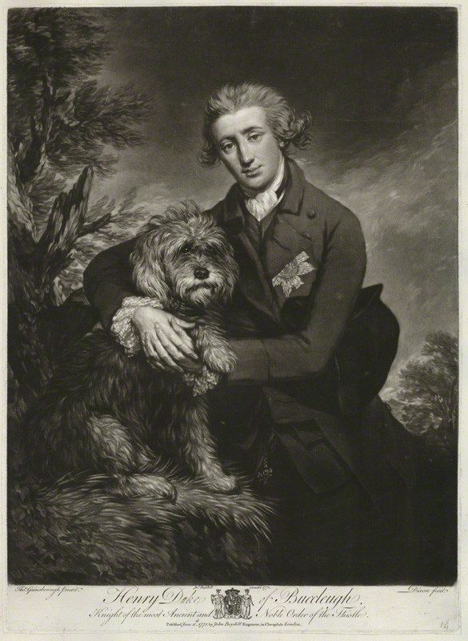
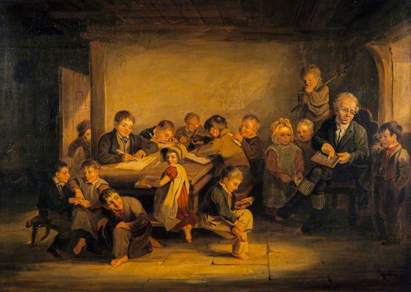

这一页在做什么
国家该不该花钱办教育，怎么花？斯密先拿大学开刀：教书的人拿谁的钱、怎么拿，决定了他教得多用心。牛津的教授不上课、学院纪律只为老师省事，这些全书最辣的牢骚都在这里。写到一半，他话锋一转，回头算分工的另一笔账：一辈子只做几个简单动作的人会变得愚钝。读的时候抓两条线：前半页那把「激励」的尺子，后半页怎样又被他用来设计国家的小学。

读之前：这一页在全书的哪里
上一页（页 24）讲道路、桥梁、运河这类公共工程，结论是能让用的人付钱，就让用的人付。这一页第 131 段开头就说：教育机构「同样」可以靠学费养活自己。卷一第 10 章（页 08）第 95 段斯密提过一句：欧洲学校和大学的体制要是更合理些，公众得益还会更大。这里细说。第 189 段的尚武精神接着页 23 的常备军之争。下一页（页 26）讲宗教教育，用的是同一套道理：靠信众供养的牧师比吃俸禄的卖力。
教书的人拿谁的钱、怎么拿，会决定他教得好不好吗？分工让国家富了，普通人为此付出了什么，谁该来补？
第 176–177 段斯密说得很笃定：没有公办机构，就只会教有需求的东西（必需的、方便的，至少是时髦的），女子教育就是证明。今天看，没人买的学问也可能很要紧；女子教育那段更是 18 世纪的成见。见「本站怎么看」。
读的时候带着这几个问题。不用先找答案，读完回来对照「检查一下理解」。
- 第 136 段和第 137 段说的两种大学，教师的钱各从哪来？斯密为什么说后一种最糟？§1
- 第 141 段说学位特权「有助于改进教育」，斯密是认真的吗？§2
- 说分工让人变得愚钝的那一段，最后一句接着什么？斯密主张取消分工吗？§7
- 斯密的教区小学，教师的报酬为什么只让公家付一部分？§8
这一页的路线
斯密先立一条普遍规律（第 134 段）：各行大多数人有多卖力，看他们有多大必要卖力。然后像做实验一样比较几种发钱的办法：学费占大头的大学、只拿薪俸的大学，再比两种管法，同事互管和外人来管。第 140–147 段拿同一把尺子去量学位特权、奖学金、指定导师和学院纪律，再拿击剑学校和英格兰的公学当对照组。接着他钻进历史（第 149–166 段）：大学原是培养教士的地方，所以教些对世俗生活没用的东西。读到这里会觉得跑题，其实是在解释没用的课为什么一直没被淘汰。古希腊罗马那几节是第二个对照组：国家只管军训，老师靠学费，效果反而好。到第 178 段话锋一转：那国家就别管教育了吗？不是。分工会让普通人变得愚钝，所以要办教区小学，而办法用的还是前半页那把尺子：教师只部分由公家付钱。
斯密落在哪：教师的收入和学生、名声脱钩，教学就会荒废，大学的毛病多出在这里；但普通人的教育不能撒手不管，分工会让他们变得愚钝，国家该花小钱办教区小学，教师部分由公家付、部分靠学费。
分节地图
这一页是卷五第 1 章第三部分的第二项，本站切成 9 节。粗体是本站起的节名；「杨译里找」后面是杨敬年译本里这一节开头附近的小标题或第一句，在电子书里搜它就能跳过去；灰色的英文是原文这一节开头的几个词。标「先读」的是最短读法，读完打个勾。
- 牛津的教授连装都不装了第二项 论青年教育机构的支出THE institutions for the education of …第 134 段立规律，第 137 段是全页最锐利的一段，第 138 段末尾那句牛津是名句。第 139 段顺手骂了法国大学的外行管法。
- 学位特权和「假讲课」强迫青年人上大学，对教师有坏影响Whatever forces a certain number of students …学位、奖学金、指定导师、学院纪律一条条量过去。第 141 段是反话；第 144 段「假讲课」最好笑；第 146 段击剑学校是对照组。
- 大学原是神学院它们最初设立是为了教育牧师学习神学The present universities of Europe were …欧洲大学为什么教拉丁文、希腊文，是课程史，和主线关系不大。第 151 段宗教改革的小故事看一眼，其余可以跳过。
- 蛛网学问和出国游学后来哲学分为五个部门This ancient division of philosophy into …哲学怎样被改成神学的预科，第 159 段骂本体论是「蛛网学问」。第 166 段挖苦出国游学，斯密自己就干过这份差事。
- 古希腊罗马怎样办教育一些现代教育机构的效果就是如此…Such have been the effects of …国家只给场地，老师靠学费。第 170 段斯密跟柏拉图唱反调，第 174 段讲罗马法为什么成了体系，是个漂亮的小推理。
- 有需求就有好老师古代制度比现代制度更成功，后者腐化了公共教师，窒息了私人教师The abilities, both civil and military, …两个对照组的结论。第 176 段说没公办机构就只教有需求的，要带着警惕读；第 177 段女子教育今天读来刺耳。
- 分工让工人变得愚钝国家对教育不应给予注意吗？Ought the public, therefore, to give …全页的转折。第 180 段是全书对分工最严厉的一段，要读到最后一句；第 181 段拿野蛮社会对照，不是怀旧。
- 一个教区一所小学校国家能够鼓励或坚持一般学会读、写和算But though the common people cannot, …三个办法：教区小学、小奖品、开业前考读写算。第 185 段教师「部分但不全部」由公家付，用的是前半页那把尺子。
- 懦弱和无知都是残缺人民的尚武精神会减少常备军的规模和危险That in the progress of improvement …两条理由：尚武精神（接页 23 的常备军），无知本身就是残缺。第 191 段说受教育的人民更守秩序，两面都要看。
先用中文过一遍：这一页的概念
先把这一页用到、斯密默认你懂的几个概念讲一遍。讲的是概念本身，斯密拿它推出什么，读原书时自己看。每个概念都有一句「今天」：今天的经济学怎么叫它、怎么看它。
§1利益和职责（激励） his interest is set in opposition to his duty
一件活的报酬怎么给，会悄悄决定人干得多用心。按件计酬的裁缝，多做一件多挣一份；拿死工资、干好干坏一个样的人，能少干就少干。经济学管这叫激励：最好让一个人的利益和他的职责朝着同一个方向。斯密在这里比了两种大学：一种薪俸只占教师收入的一部分，常常是一小部分，大头来自学费，教师还在乎名声和学生的口碑；另一种不许收学费、只拿薪俸，利益和职责「对立得不能再对立」。留意他的限定：at least as interest is vulgarly understood，至少按一般人理解的利益。他没说人只认钱，第 136 段就提到名声和学生的感激。
今天：今天叫「委托—代理问题」：出钱的人看不清干活的人有多卖力，就得设计报酬让两边利益对齐。后来的研究还补了一条：报酬挂得太死，人会只做被考核的那一部分。
在这一页：第 134–138 段立论；第 185 段教区小学的教师只部分由公家付，用的是同一条道理。
§1捐赠基金 endowments of schools and colleges
学校的一笔「老本」：一片地产收的地租，或一笔钱生的利息，专门拿来养老师、办学，捐的人可能是君主，也可能是私人。好处是稳：不管今年来了多少学生，老师都有饭吃。斯密看到的是另一面：老师的生计既然不靠学生、不靠名声，用功的必要就小了；公家给的薪俸还让私人教师没法竞争，就像没有补贴的商人去和拿补贴的商人比价（第 175 段）。要留意，斯密说的 public endowments 不是国家财政：第 132 段说，欧洲大部分地方学校的基金多出自地方收入、地产或私人捐赠，几乎不动用国家的一般收入。他骂的「公共」机构，是有固定进项、不靠学生的机构，不是今天说的「公立学校」。
今天：今天大学的钱多来自政府拨款、学费和捐赠基金。终身教职把教授的饭碗和学生评价隔开，为的是学术自由；斯密担心的懈怠也确实会有，两头怎么取舍至今在争。
在这一页：第 132–135 段：基金减少了教师用功的必要；第 175 段：薪俸还压垮了私人教师。
§7分工的精神代价 mental mutilation
页 01 讲的分工，让许多人一辈子只做一两个简单动作。斯密说，人的理解力是被日常的工作塑造的：工作里碰不到难题，就用不着想办法，久而久之，动脑的习惯就丢了。他列的代价有三样：智力（判断不了国家大事，连私人生活里的许多本分也难判断对）、社交和情感（谈不了道理，生不出慷慨、高尚、温柔的感情）、尚武（不敢也不会打仗）。后面第 190–191 段他用 mutilated（残缺）这个词：心灵缺了一块，就像身体缺了手脚。要留意，他说的是以劳动为生的大多数人；整个社会的行当千变万化，少数不干具体活的人反而因此见识更广（第 181 段）。
今天：马克思以后常叫「异化」，斯密没用这个词。今天的劳动社会学研究「工作复杂度」怎样影响人的思维，证据支持他说的方向，程度没有他说的那么重，见「对照今天」。
在这一页：第 180–181 段立论；第 190–191 段用 mutilated 来说懦弱和无知。
§9教育的外部好处 the state derives no inconsiderable advantage
一个人受了教育，好处不全落在自己身上：他看得懂告示和合同，不容易被谣言煽动，和他打交道的人、整个社会都沾光。经济学把这种「好处外溢到旁人」叫正外部性。外溢的那一份，各家掏钱时不会算进去，所以全靠各家自己出钱，受教育的人会比对社会最合适的少，公家补一点就说得通。斯密在第 191 段给了两层理由。一层不讲回报：无知本身就是心智的残缺，哪怕国家得不到任何好处，也值得关心。另一层讲回报：受过教育的人不容易被狂热、迷信和党派煽动带着走。后一层带着治理的味道：他说这样的人也更尊重「合法的上级」。
今天：今天公共财政给义务教育出钱，正外部性是最常用的理由之一；弗里德曼 1955 年管它叫「邻里效应」。外溢到底有多大，研究还在争，见「对照今天」。
在这一页：第 189–191 段。第 184 段说国家花「很少的钱」就能让几乎所有人学会读写算。
故事和背景
这一页里的人、事和 18 世纪的东西，按在书里出现的顺序排，标题前是节号。
§1斯密的六年，Gibbon 的十四个月
斯密 1740 年拿着专给格拉斯哥学生去牛津的 Snell 奖学金，进了 Balliol 学院，一直待到 1746 年。第 138 段那句「连装都不装了」，背后是他自己的六年。同一个牛津还有一位证人：写《罗马帝国衰亡史》的 Edward Gibbon，1752 年不满十五岁进了 Magdalen 学院。他晚年在回忆录里说，那十四个月是他一生中最闲散、最无益的；他的导师「记得自己有薪水可领，只忘了自己有职责要尽」。Gibbon 在回忆录里直接引了斯密这一句。也要留意斯密骂的是谁：领大学讲席薪俸的「公共教授」。学生平日跟学院里的导师读书，而第 163 段他说，有些最富的大学里，导师也只教些零零碎碎的东西。
§1格拉斯哥教授的工资单
斯密 1751 年起在格拉斯哥大学当教授，1764 年辞职。Cannan 在第 136 段加了一条注：照斯密传记作者 Rae 的估计，斯密在格拉斯哥的薪水大约 70 镑，外加一所房子，学生交的学费将近 100 镑。也就是说，他自己就在第 136 段说的那种大学里：薪水只占一部分，大头来自学生。他当学生的牛津，是第 138 段骂的那一种；他当教授的格拉斯哥，是他夸的那一种。论证和履历对得上，这让他的话更有分量，也提醒读者：他是这个制度的受益者，说起它的好处来难免顺口。
§2学位是一种学徒期
第 141 段说：学位特权是一种学徒法，它们对改进教育的贡献，和别的学徒法对改进手艺的贡献一样大。这是反话。卷一第 10 章斯密把学徒法批得体无完肤，页 08 讲过它是一种进入壁垒，所以「一样大」就是「几乎没有」。杨译照字面译，读的时候别当真。两年前他在一封私信里说过同样的话。1774 年，爱丁堡的医学教授 William Cullen 想请朝廷派员整顿苏格兰几所大学滥发医学博士学位的事，托 Buccleuch 公爵出面，公爵先把材料转给斯密看。斯密回信不赞成：「垄断者很少做出好活」；学位能担保的，只是毕业生的学问。
§2击剑学校为什么教得好

第 146 段是整个批评的对照组：没有公办机构来教的东西，一般教得最好。去击剑或跳舞学校的年轻人，不一定学得很好，但很少学不会。马术学校太贵，多数地方是公办的，效果就没那么明显。读、写、算，当时也多半是在私人办的学校里学会的，很少有人学不到够用的程度。斯密要读者自己比较：同样是教书，靠学费吃饭的剑术师和吃讲席薪俸的教授，谁更在乎学生学没学会？
§4十七岁出国，二十一岁回来

第 166 段把「大游学」挖苦得最狠：十七八岁出国，二十一岁回来，学了一两门说不利索的外语，人却通常更自负、更没原则、更放荡；只有大学自己名声扫地，这么荒唐的做法才流行得起来；父亲把儿子送出国，至少眼不见心不烦。写这段的人自己干过这行。1764 年初斯密辞掉格拉斯哥的教职，陪十七岁的 Buccleuch 公爵去法国和瑞士，在图卢兹、日内瓦、巴黎待了两年多；1766 年 10 月公爵的弟弟在巴黎病死，一行人才回国。这份差事除了年薪 300 镑，还有每年 300 镑的终身年金，他靠这笔年金回家乡专心写完了《国富论》。
§6女子教育那一段
第 177 段说：女子教育没有公办机构，所以里面没有一样无用、荒唐或古怪的东西；学的都有用，要么增添容貌的天然魅力，要么养成矜持、端庄、贞洁和节俭，好当家理事。今天读来刺耳。这一段在论证里是一个例子：斯密要证明「没人强迫，就只教有用的」，顺手把当时的性别分工当成了天经地义。「有用」是谁定的、对谁有用，他没有问：教的是父母认为女儿用得上的东西，而父母心里女儿的一生，早已被那个社会定好了。别把这段当成斯密的教育方案，也别替他圆。
§8一个教区一所学校

第 185 段夸的是斯密的家乡。苏格兰议会 1696 年通过《设立学校法》：没有学校的教区都要设一所，由当地的地主出校舍，给教师定一份每年 100 到 200 苏格兰马克的薪水；孩子上学另交学费。这正是斯密说的「部分由公家付」。执行得并不整齐，有的教区拖了二十年才请到老师。英格兰没有这样的法律，靠的是教会和善心人捐办的慈善学校，所以斯密说它的效果「没那么普遍」。他还想改课本：别教穷孩子那一点用不上的拉丁文，改教几何和力学的初步，因为几乎每一门手艺都用得上。
§9懦夫和麻风病
第 190 段的比喻很重：一个不能保卫自己、也不能为自己报仇的懦夫，心灵上的残缺就像身体缺了最要紧的肢体；他比后者更可怜，因为幸福和痛苦全在心里。就算尚武精神对国防毫无用处，政府也该防止懦弱在人民中蔓延，就像防麻风病一样。这一段接着页 23 的常备军之争：人人有军人精神，常备军就可以小一些，对自由的威胁也小一些。古希腊罗马的制度让全体人民都会用武器，现代的民兵只训练得了一小部分人，「也许瑞士除外」。比喻是 18 世纪的，论点落在第 191 段：心智健全本身就值得公家关心。
原典：斯密的原话
这本书是公版书，下面几段整段放斯密的原文，配本站的白话译。原文后面的灰字告诉你它在杨译里的哪个小标题附近，可以对照着读；最后一行是这段里今天容易读错的 18 世纪词。
§1利益和职责对着干
全页最锐利的一段，激励问题的经典表述，后面接着全书最有名的一句牢骚。在杨译当教师的报酬部分地来自学费时，必要性不会完全消失下面那段；牛津那句在下一个小标题下面那段的末尾。
In other universities the teacher is prohibited from receiving any honorary or fee from his pupils, and his salary constitutes the whole of the revenue which he derives from his office. His interest is, in this case, set as directly in opposition to his duty as it is possible to set it. It is the interest of every man to live as much at his ease as he can; and if his emoluments are to be precisely the same, whether he does, or does not perform some very laborious duty, it is certainly his interest, at least as interest is vulgarly understood, either to neglect it altogether, or, if he is subject to some authority which will not suffer him to do this, to perform it in as careless and slovenly a manner as that authority will permit. If he is naturally active and a lover of labour, it is his interest to employ that activity in any way, from which he can derive some advantage, rather than in the performance of his duty, from which he can derive none. … In the university of Oxford, the greater part of the public professors have, for these many years, given up altogether even the pretence of teaching.
本站译：在另一些大学里，教师不许向学生收任何谢礼或学费，薪俸就是他从这个职位得到的全部收入。这时，他的利益和他的职责被摆到了能摆到的最直接的对立面上。每个人的利益都是活得越安逸越好；如果一件很辛苦的差事，做与不做，报酬都一模一样，那么他的利益，至少按一般人理解的利益，肯定是干脆不做；要是上面有个权威不许他这样，那就在权威容许的限度内，做得要多马虎有多马虎。如果他天生好动、爱干活，他的利益也是把这股劲头用到能给自己捞到点好处的地方，而不是用来尽职，因为尽职什么好处也捞不到。……在牛津大学，大部分公共教授多年来连装作教书的样子都放弃了。
「at least as interest is vulgarly understood」是限定：斯密没说人只认钱，前一段他刚说过名声和学生的感激也管用。他骂的也不是所有大学：第 136 段那种学费占大头的大学（比如他教过的格拉斯哥）就好得多。
- honorary学生付给老师的谢礼、学费，不是「荣誉的」
- vulgarly一般人的、通常的，vulgar 在这里指普通人，不是「粗俗」
- public professors领大学讲席薪俸、负责公开讲课的教授，不是「公立大学的教授」
§2假讲课
全页最好笑的一段，后面接着那句「纪律只为老师省事」。在杨译指定学生跟随某个导师是同样有害的下面那段的后半，接着下一个小标题下面那段的开头。
The teacher, instead of explaining to his pupils himself the science in which he proposes to instruct them, may read some book upon it; and if this book is written in a foreign and dead language, by interpreting it to them into their own; or, what would give him still less trouble, by making them interpret it to him, and by now and then making an occasional remark upon it, he may flatter himself that he is giving a lecture. … The discipline of the college, at the same time, may enable him to force all his pupils to the most regular attendance upon this sham-lecture, and to maintain the most decent and respectful behaviour during the whole time of the performance. The discipline of colleges and universities is in general contrived, not for the benefit of the students, but for the interest, or more properly speaking, for the ease of the masters. … Where the masters, however, really perform their duty, there are no examples, I believe, that the greater part of the students ever neglect theirs. No discipline is ever requisite to force attendance upon lectures which are really worth the attending, as is well known wherever any such lectures are given.
本站译：教师用不着亲自给学生讲解他要教的那门学问，可以拿一本讲它的书来念；书要是用一种外国的、早已没人说的语言写的，就把它翻成学生的母语讲给他们听；或者更省事，让学生翻给他听，自己时不时插一句评语。这样，他就可以自以为在讲课了。……同时，学院的纪律还能让他逼着全体学生一次不落地来听这场假讲课，并且在整场表演中始终举止端正、毕恭毕敬。学院和大学的纪律，一般不是为了学生的好处定的，而是为了老师的利益，说得更准确些，是为了老师的清闲。……不过，凡是老师真正尽了职的地方，我相信，从没见过大部分学生不尽自己的本分。真正值得听的课，从来用不着纪律逼人去听，凡是有这种课的地方，谁都知道这一点。
「I believe」是斯密的原话，他说的是自己所知。学生会不会自动奖赏好老师，今天的研究打了折扣，见「对照今天」第一张卡的「另一边」。
- dead language已经没有人当母语说的语言，这里指拉丁文
- masters教师，不是「主人」
- discipline校规、管束，不是「学科」
§7分工的另一笔账
全书对分工最严厉的一段，和页 01 的别针厂正好对照。在杨译在某些场合，它应当；在其他场合，它不必下面的第二段。
In the progress of the division of labour, the employment of the far greater part of those who live by labour, that is, of the great body of the people, comes to be confined to a few very simple operations; frequently to one or two. But the understandings of the greater part of men are necessarily formed by their ordinary employments. The man whose whole life is spent in performing a few simple operations, of which the effects too are, perhaps, always the same, or very nearly the same, has no occasion to exert his understanding, or to exercise his invention in finding out expedients for removing difficulties which never occur. He naturally loses, therefore, the habit of such exertion, and generally becomes as stupid and ignorant as it is possible for a human creature to become. … His dexterity at his own particular trade seems, in this manner, to be acquired at the expence of his intellectual, social, and martial virtues. But in every improved and civilized society this is the state into which the labouring poor, that is, the great body of the people, must necessarily fall, unless government takes some pains to prevent it.
本站译：随着分工的推进，靠劳动为生的绝大多数人，也就是人民大众，干的活渐渐只剩下几个非常简单的动作，常常只有一两个。可是大多数人的理解力，必然是被他们日常的工作塑造出来的。一个人一辈子都在做几个简单动作，动作的结果或许也总是一样，或者差不多一样，他就没有机会动用理解力，也没有机会发挥巧思去想办法排除困难，因为困难根本不会出现。于是他自然丢掉了动脑的习惯，一般会变得愚钝无知，到了一个人所能到的极点。……他在自己那一行里的熟练，看来就是这样拿智力、社交和尚武的品质换来的。而在每一个进步的、文明的社会里，劳动贫民，也就是人民大众，必然会落到这一步，除非政府花些力气去防止。
这段常被断成两半：只引前半，成了「斯密反对分工」；只引最后一句，又成了「斯密要国家包办教育」。完整地读：代价是「必然」的，但要靠政府「花些力气」去防，办法在下一节，是一所收费的小学，不是取消分工。
- understanding理解力、判断力
- stupid在 18 世纪偏「麻木、迟钝」，和下一句的 torpor（麻木）是一路意思
- labouring poor劳动贫民：靠工资过活的大多数人，不专指赤贫的人
§8教区小学的老师怎么发工资
斯密开的药方，也是前半页激励论的直接应用。在杨译国家能够鼓励或坚持一般学会读、写和算下面的第二段。
The public can facilitate this acquisition by establishing in every parish or district a little school, where children may be taught for a reward so moderate, that even a common labourer may afford it; the master being partly, but not wholly paid by the public; because, if he was wholly, or even principally paid by it, he would soon learn to neglect his business. In Scotland the establishment of such parish schools has taught almost the whole common people to read, and a very great proportion of them to write and account. In England the establishment of charity schools has had an effect of the same kind, though not so universally, because the establishment is not so universal. If in those little schools the books, by which the children are taught to read, were a little more instructive than they commonly are; and if, instead of a little smattering of Latin, which the children of the common people are sometimes taught there, and which can scarce ever be of any use to them; they were instructed in the elementary parts of geometry and mechanics, the literary education of this rank of people would perhaps be as complete as it can be.
本站译：国家可以这样帮大家学：在每个教区或地区设一所小学校，孩子在那里上学，收费低到连普通劳工都付得起；教师的报酬一部分由公家付，但不全由公家付，因为要是全由公家付，甚至主要由公家付，他很快就会学会荒废本业。在苏格兰，设立这种教区学校，已经让几乎所有普通人都会读书，其中很大一部分人还会写会算。在英格兰，设立慈善学校也有同样的效果，只是没那么普遍，因为这种学校设得没那么普遍。如果这些小学校里教孩子识字的课本，比现在常用的更长见识一些；如果不教普通人家的孩子那点几乎永远用不上的拉丁文皮毛，改教几何和力学的入门，这一阶层人民的读书教育，也许就完备到了能有的程度。
这段常被读成「斯密主张免费的国家学校」。他要的是收费低廉、教师部分由公家付的学校，理由正是前半页的激励论。另外两个办法在后两段：给读写算好的穷孩子发小奖品，开业前要考读写算。
- parish教区：英国最基层的地方单位，兼管济贫和学校
- account算账、算术
- mechanics力学，不是机械工人
- charity schools慈善学校：教会和善心人捐钱办的穷孩子学校
§9国家从教育穷人里得到什么
教育外部好处的经典论证，开头是那个刺耳的比较。在杨译安全无知和愚蠢下面那段（电子版把「完全」错成了「安全」）。
A man without the proper use of the intellectual faculties of a man, is, if possible, more contemptible than even a coward, and seems to be mutilated and deformed in a still more essential part of the character of human nature. Though the state was to derive no advantage from the instruction of the inferior ranks of people, it would still deserve its attention that they should not be altogether uninstructed. The state, however, derives no inconsiderable advantage from their instruction. The more they are instructed, the less liable they are to the delusions of enthusiasm and superstition, which, among ignorant nations, frequently occasion the most dreadful disorders. An instructed and intelligent people besides, are always more decent and orderly than an ignorant and stupid one. They feel themselves, each individually, more respectable, and more likely to obtain the respect of their lawful superiors, and they are therefore more disposed to respect those superiors. They are more disposed to examine, and more capable of seeing through, the interested complaints of faction and sedition, and they are, upon that account, less apt to be misled into any wanton or unnecessary opposition to the measures of government.
本站译：一个人缺了人该有的智力的运用，如果能这么比的话，比懦夫还要可鄙；他看来是在人性里更要紧的一个部分上残缺、畸形了。即使国家从教育下层人民里得不到任何好处，让他们不至于全无教育，也仍然值得国家关心。何况国家从中得到的好处并不小。他们受的教育越多，就越不容易被狂热和迷信蒙骗，而在愚昧的民族里，狂热和迷信常常酿成最可怕的动乱。此外，受过教育、明白事理的人民，总是比无知愚钝的人民更体面、更守秩序。他们每个人都觉得自己更值得尊重，也更可能得到合法上级的尊重，所以也更愿意尊重这些上级。对党派和煽动者那些出于私利的抱怨，他们更愿意去审视，也更有本事看穿，因此也不大会被引着去任性地、无谓地反对政府的措施。
两层理由要一起看：前一半是启蒙，人不该被狂热蒙骗；后一半是治理，受过教育的人更守秩序、更尊重上级。段末还有一句（这里略去）：在自由国家，政府的安危很大程度上靠人民怎样评判它，所以人民更不该草率地评判。
- enthusiasm宗教狂热，不是「热情」
- faction党派、派系，带贬义
- sedition煽动叛乱
- inferior ranks下层人民，18 世纪讲社会等级的说法
译本勘误
杨译这一项整体可靠。下面只收会把人读歪的几处。灰字是英文原文那一处的几个词；方框里是杨译的原句，在电子书里搜它。
§2很少「学不会」，不是很少「不去学」误译
… he seldom fails of learning …
译本：「但他很少不去学习击剑和跳舞」
原文说：去击剑或跳舞学校的人不一定学得很好，但很少学不会。比的是结果：没有公办机构的教育，至少能把东西教会。杨译把它读成了想不想学、去不去学，这个对照组就没了。
§2大学里「没人教」译反
… the youth neither are taught …
译本：「总是可以找到什么办法去教他们的」
原文说：在大学里，青年人既没人教，也常常找不到像样的门路去学那些大学本该教的学问。杨译读成大学「教的是科学」，把斯密骂大学的话译成了夸大学。这一段拿公学和大学对比，读反了，对比就没了。
§2拿学位「不需要」公学的证明译反
… it is not necessary that …
译本：「一个人必须拿到一张文凭」
原文说：要拿学位，并不需要出示在某所公学读满几年的证明；考试过关就行，不问在哪儿学的。这正是公学不腐败的原因：它没有特权，学生不是被逼来的。杨译把「不需要」译成「必须」，和下一句也接不上。
§7「有些情况下」，不是「大多数场合」误译
… In some cases the state …
译本：「在大多数场合，社会的状态必然使大多数个人」
原文是 In some cases：有些社会不用政府操心，人们自然就能养成那个社会需要的才能和品德；另一些社会就不行。杨译成「大多数场合」，读起来像斯密认为政府多半不必管教育，下一段的转折就弱了。
§7困难根本不会出现译反
… removing difficulties which never occur …
译本：「找出克服所遇到的困难的办法」
原文说：这个人没有机会动脑筋想办法排除困难，因为困难根本不会出现。杨译成「所遇到的困难」，好像他天天碰到困难，只是没机会解决。斯密的意思是工作单调到连难题都碰不上；第 181 段野蛮社会里困难「不断出现」，正好对照。
§9「缺了」智力的运用，不是「用错了」误译
… without the proper use of …
译本：「一个人如果不适当地使用人的智力」
原文 without the proper use：缺了人该有的智力的运用，说的是一种状态，上一节刚说过它是分工造成的。杨译成「如果不适当地使用」，像在说个人用错了脑子、该自己负责，和斯密要政府出手的意思拧了。
读完：斯密到底说了什么
读完原书再看。下面把这一页的论点按逻辑重排，每条后面标着依据在哪几段，以及今天怎么看（理由在「对照今天」和「本站怎么看」）。
教师的收入和学生、名声脱钩，教学就会荒废
各行大多数人有多卖力，看他们有多大必要卖力。教师全靠薪俸、不许收学费，利益和职责就对着干；同事互管会互相包庇，外人来管又专横外行。学位特权、奖学金、学院纪律，都在替懒老师挡住竞争。限定词：「至少按一般人理解的利益」。
§1 §2 第 134–145 段没有公办机构，就只教有需求的东西
击剑、跳舞、读写算没有公办机构，一般教得最好；古希腊罗马的老师靠学费，水平似乎很高；大学护着没用的旧学问，最富的大学一般最慢接受新学问。但他也承认，大学教得不好的那些东西，没有大学就不会普遍有人教（第 148 段）。
§2 §4 §6 第 146–148、164、175–177 段分工让以劳动为生的大多数人变得愚钝，除非政府设法防止
人的理解力由日常工作塑造；一辈子做几个简单动作的人碰不到难题，「一般」会变得愚钝无知，熟练「看来」是拿智力、社交和尚武的品质换的。野蛮社会人人得动脑；文明社会整体的知识更丰富，大多数人却更迟钝。
§7 第 179–181 段公家办教区小学，就能让几乎所有人学会读写算
读写算学得早，穷孩子也来得及学。办法有三：教区小学（教师部分由公家付）、给学得好的孩子发小奖品、开业前要考读写算。苏格兰的教区学校就是证明。
§8 第 184–188 段受过教育的人民不容易被狂热和煽动带着走，国家因此受益
即使国家得不到任何好处，无知本身就是心智的残缺，值得关心；何况受过教育的人不容易被狂热和迷信蒙骗，更守秩序，也更能看穿党派的煽动。尚武精神同理，还能让常备军小一些。
§9 第 189–191 段合起来：同一把激励的尺子，前半页拿来拆大学，后半页拿来建小学。斯密既不信公家包办，也不信市场会照顾到穷人家的孩子；分工带来的财富，要拿一部分出来补分工带来的愚钝。
对照今天
这一页里能拿后来的研究和数据检验的说法。每张卡判的是标题里「书里的说法：」后面那一句。
- 成立今天的经济学和证据支持这句话。
- 部分成立大方向对，细节或适用范围要改。
- 过时说的是 18 世纪的世界，当时也许对，今天的制度和技术已经变了。
- 被推翻后来的经济学或证据说明它错了。
- 有争议经济学界至今没有定论，两边各有代表性的研究。
书里的说法：教师的收入和学生、名声无关，就会懈怠
- 书里
- 第 135–138 段；第 185 段把同一条道理用到教区小学。
- 当时
- 斯密说，有的大学不许教师收学费，全靠薪俸；也有的大学教师收入大半来自学费，他自己在格拉斯哥就是这样。
- 今天
- 在拿固定工资、又少有人查的地方，懈怠确实常见：Chaudhury 等人在六个发展中国家突击查访公立学校，平均约 19% 的教师不在岗，在岗的也不少没在上课。但这不是规律，许多拿固定工资的老师照样尽责，名声和职业认同也管用。把钱和成绩挂上，效果也时有时无：Muralidharan 和 Sundararaman 在印度的随机实验里，按学生成绩发奖金提高了考分；Fryer 在纽约两百多所学校的实验里没看到效果。核对于 2026-10。依据：Chaudhury et al., Journal of Economic Perspectives, 2006；Muralidharan & Sundararaman, Journal of Political Economy, 2011；Fryer, Journal of Labor Economics, 2013。
- 另一边
- 斯密的药方是让学生交的学费决定教师的收入，前提是学生分得出谁教得好（第 145 段：「我相信」学生不会辜负尽职的老师）。Carrell 和 West 在美国空军学院（学生随机分给老师）发现：学生当下考得好、给老师打分高的老师，学生在后续课程里反而考得差。学生喜欢的，不一定是学到最多的。依据：Carrell & West, Journal of Political Economy, 2010。
书里的说法：一辈子只做几个简单动作的人，一般会变得愚钝无知
- 书里
- 第 180 段：「generally」变得愚钝无知，到了人所能到的极点，除非政府设法防止。
- 当时
- 斯密看到的是手工作坊里的重复劳动，工厂制度才刚开头。
- 今天
- 社会学家 Kohn 和 Schooler 追踪一批美国在职男性约十年，发现工作的「实质复杂度」（要动脑判断的成分）越高，人后来的思维越灵活，这个影响是实在的，大约相当于本人原有灵活性影响的四分之一；反过来，思维灵活的人日后也更会去做复杂的活。方向和斯密一致，「愚钝到极点」是修辞。另一个变化是：Autor、Levy 和 Murnane 发现，计算机替掉的主要是能写成规则的常规工序。核对于 2026-10。依据：Kohn & Schooler, American Journal of Sociology, 1978；Autor, Levy & Murnane, Quarterly Journal of Economics, 2003。
书里的说法：公家办小学，就能让几乎所有人学会读写算
- 书里
- 第 184–185 段；第 187 段还要开业前考读写算。
- 当时
- 苏格兰 1696 年立法要每个教区设学校；英格兰靠慈善学校，没有全国的制度。
- 今天
- 19 世纪起各国陆续由公家办初等教育，英格兰 1870 年通过《初等教育法》，1880 年的法律让强制入学推行到各地。读写从少数人的本事变成几乎人人都会：按 Our World in Data 的估计，1820 年全世界识字的人约占 12%，今天约 87%。靠的主要正是公家出钱的小学。只是今天看，这笔钱算不上斯密说的「很少」。核对于 2026-10。依据：Our World in Data, Literacy；Elementary Education Acts 1870、1880。
- 另一边
- 斯密对家乡的夸奖要打点折扣。历史学家 Houston 用会不会签名来量识字，发现 1750 年以前苏格兰的识字水平比人们以为的低，和同时期的英格兰相近。会读的人通常比会写的多，所以「几乎人人会读」不一定错，但苏格兰没有传说中那样遥遥领先。依据：R. A. Houston, Scottish Literacy and the Scottish Identity, 1985。
书里的说法：受过教育的人民，更不容易被狂热和党派煽动带着走
- 书里
- 第 191 段。
- 当时
- 斯密心里是 17 世纪的宗教战争和教派狂热；英国在 1745 年刚经历过詹姆斯党人的起事。
- 今天
- Milligan、Moretti 和 Oreopoulos 利用义务教育法让一些人多读了几年书来比较：多受教育的人更关心政治、参与得更多，在美国还更常投票。教育让人更关心公共事务，这一半有证据。核对于 2026-10。依据：Milligan, Moretti & Oreopoulos, Journal of Public Economics, 2004。
- 另一边
- Kahan 等人发现，在气候变化这类和身份绑在一起的问题上，科学素养和算术能力越高的人，按立场分得越开。教育让人更会分辨，也让人更会替自己的立场找理由；它挡得住一部分煽动，挡不住全部。依据：Kahan et al., Nature Climate Change, 2012。
本站怎么看
这一页最值得争的几个问题。每块先摆主流看法，再摆斯密在书里怎么说，最后是本站的评论。
斯密反对公办教育吗
主流看法：主张教育市场化的人常把斯密当先驱：经济学家 E. G. West 1965 年的《教育与国家》认为，英格兰在 1870 年国家办学以前，私人办学已经相当普遍。弗里德曼 1955 年主张把「出钱」和「办学」分开：基础教育的好处外溢，政府该出钱，学校却不必由政府来办，这就是教育券的由来。
斯密的看法：前半页（第 135–177 段）确实在骂靠基金和薪俸养着的学校；但第 179–180 段说文明社会里政府必须关心普通人的教育，第 185–187 段给出办法：公家出钱办教区小学，教师部分由公家付，再加奖品和开业考试。
本站的评论：斯密两头都不站。他不信公家包办，也不信市场会自动照顾到穷人家的孩子；他要公家出钱，又要老师的饭碗仍跟学生挂钩，还要用开业考试把读写算变成人人必过的门槛。这和弗里德曼「出钱和办学分开」的思路有亲缘。拿斯密当「教育市场化」或「国家办学」任何一边的招牌，都只读了半页。
分工让人变蠢，和别针厂那一页矛盾吗
主流看法：经济学家 E. G. West 1964 年认为，卷一说分工让工人更灵巧、还会发明机器，卷五说分工让他们愚钝，两处「不相容」。Rosenberg 1965 年回应：卷一本就说过，很多改进出自造机器的人和「哲学家」；斯密的意思是，分工让整个社会越来越有创造力，同时让大多数劳动者的创造力衰退。马克思在《资本论》里挖苦斯密的教育方案只是「顺势疗法的剂量」。
斯密的看法：第 180–181 段：熟练是拿智力、社交和尚武的品质换来的；文明社会整体的行当千变万化，大多数人却只做一两样，少数不干具体活的人才因此见识广。卷一第 1 章第 9 段确实说过「哲学家」也会发明机器。
本站的评论：本站同意 Rosenberg：这不是自相矛盾，而是斯密难得的诚实，同一个机制的账他两边都记了。页 01 的别针厂只讲好处，读到这里才算读完。马克思的挖苦也有道理：一个教区一所小学，补不回一辈子的重复劳动。今天流水线上的工人、按算法派单的骑手算不算斯密说的那种人，值得读者自己想一想。
没人要学的学问，该不该有人养
主流看法：经济学家 Nelson（1959）和 Arrow（1962）指出，基础研究的成果谁都能用，做出来的人收不回全部好处，市场会供给不足，所以要靠政府和大学拿固定经费来养。终身教职也是为了让学者不必迎合一时的风气。
斯密的看法：第 176 段说，没有公办机构就不会有人教没有需求的学问；第 164 段说，近代哲学的改进多半不是大学做出的，最富的大学一般最慢接受。但第 148 段他也承认：大学里教得不好的东西，没有大学就不会普遍有人教，个人和社会都会吃亏。
本站的评论：斯密看到了真问题：有固定进项、不看成绩的机构会懈怠，也会护着过时的学说，18 世纪的牛津就是例子。可他的结论对教学大体成立，对研究就不成立：没有固定经费，很难有人花几十年去做没有买家的学问。第 177 段拿女子教育当「市场只教有用的」的证据，更露出这把尺子的局限：「有用」由出钱的人说了算。
本站的总体看法：这一页是斯密用激励解释制度最漂亮的一次，牛津的教授和教区的小学是同一个道理的两面。今天看，「收入和表现脱钩就会懈怠」大体成立，但学生评价、考分奖金都不是万灵药；分工让人愚钝，方向对、说过了头；国家出钱普及读写算，后来的历史证明他对了。
检查一下理解
先在心里答，再点开。答错的那题，回书里把对应那一节再读一遍。
1.（§1）斯密说各行大多数人有多卖力，取决于什么？第 136 段和第 137 段的两种大学差在哪？
取决于他有多大必要卖力，也就是收入要不要靠干得好坏去挣。学费占大头的大学，老师还在乎名声和学生；不许收学费、全靠薪俸的大学，利益和职责正好对着干。
2.（§1）教师归同事管和归外人管，各有什么毛病？
同事管，大家多半会互相宽容，你不尽职我也不尽职。外人管（主教、省长、大臣），只能逼他上够钟点，又未必懂学问，管得任性，教师只好去巴结上司。
3.（§2）「假讲课」是怎么回事？
教师不自己讲，拿一本死语言写的书来念、翻给学生听，或者干脆让学生翻给他听，偶尔评两句；再用学院纪律逼学生按时出席、毕恭毕敬。
4.（§4）斯密为什么说出国游学流行起来，要怪大学？
大学名声太坏，父亲们才宁愿把刚离开中学的儿子直接送出国；回来的人多半学了点说不利索的外语，人却更自负、更放荡。
5.（§7）斯密说分工让人愚钝，原因是什么？猎人和牧人的社会为什么不会这样？
一辈子只做几个简单动作，困难根本不会出现，用不着动脑，动脑的习惯就丢了。猎人和牧人每个人要干许多种活，困难不断出现，人人都得想办法。
6.（§8）斯密提了哪三个办法？教区小学的老师为什么不能全由公家付钱？
设教区小学、给学得好的孩子发小奖品、开业前要考读写算。全由（甚至主要由）公家付，老师很快就会荒废本业，这是前半页激励论的直接应用。
7.（§9）除了国防，斯密还给教育普通人举了什么理由？
无知本身就是心智的残缺，即使国家得不到好处也值得关心；而且受过教育的人不容易被狂热和迷信蒙骗，更守秩序，更能看穿党派的煽动。
用一句话写下：斯密在这几章反对谁、主张什么，今天还成不成立。
想一想：你上过的课里，哪位老师最用心？他的收入跟你满不满意有没有关系？你自己的工作里，有多少时间是在做「困难根本不会出现」的重复动作？
精彩回顾
隔几周回来时看这里。想不起来，点节号回到那一节。
一句话：教书的人拿谁的钱，决定他教得多用心；分工让国家富了，普通人的心智要公家出钱来补。
斯密在牛津读了六年。他说那里大部分领讲席薪俸的教授，多年来连装作上课都放弃了；Gibbon 说他的导师只记得领薪水。
§1收入和教得好坏无关，人的利益就是能少干就少干。斯密的药方：让老师的饭碗至少一部分靠学生。
§1念一本拉丁文的书，或者让学生翻给老师听，再用学院纪律逼大家毕恭毕敬地坐满。
§2斯密挖苦出国游学，自己却陪十七岁的公爵游学两年多，拿着这份终身年金写完了《国富论》。
§4一辈子只做几个简单动作的人，一般会变得愚钝，除非政府设法防止。和页 01 的别针厂是同一个机制。
§7收费低到劳工付得起，老师部分由公家付、部分靠学费。苏格兰的教区学校是样板。
§8